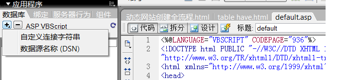
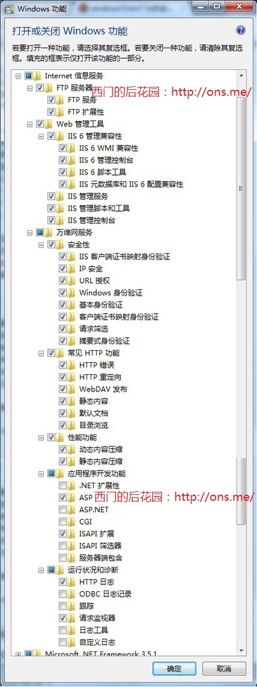
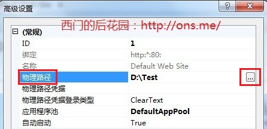
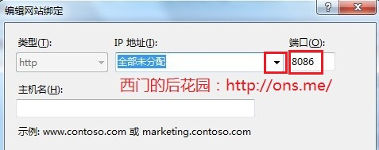
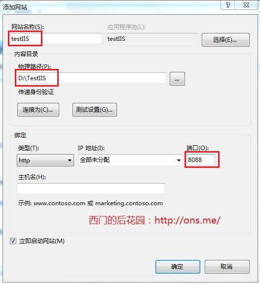

Microsoft JET Database Engine 错误 '80004005'
未指定的错误
/admin.asp，行 13
为文件夹C:\Windows\temp新添一everyone全部权限的帐户；
website
| name | method | port | address | |
| selfRecords | DSN | 8088 | F:\Website\witisopc\23\selfrecords | |
| notes | ADO | 8084 | F:\Website\witisopc\23\notes | |
| toutiao | ADO | 8080 | F:\Website\witisoPC\23\toutiao | |
| goodbooks | ADO | 8081 | F:\Website\zfirst\goodbooks | |
| notePC | ADO | 8082 | F:\Website\witisopc\23\notesPC |
启动IIS网站出现错误：另一个程序正在使用此文件,进程无法访问。一般是你的端口被其它程序占用，可以换个端口试试。可以用netstat -ano查看端口情况。也可以在任务管理器中相看，点击“查看”/选择列，勾选“PID(进程标识符)”，然后单击“进程”标签，找到80端口对应的pid，就可以看到是那个程序占用的了。
prev4
| 站点 | selfRecords | notes,toutiao,goodbooks |
| 连接方式 | DSN | ADO |
| 数据库指定 | 数据源ODBC配置 | 字符串指定 |
| 连接流程 | 1 添加IIS服务 2 新建站点(管理工具→IIS) (8088,F:\Website\witisopc\23\selfrecords)； 3 管理工具→数据源ODBC→系统DSN→添加→MS Access DB→数据源名：名称：wwu1→数据库：选择：选择网站数据库→创建； |
1 添加IIS服务 2 新建站点(管理工具→IIS) (8084,F:\Website\witisopc\23\notes)； |
| 细节 | <!--#include file="Connections/selfrecords.asp" --> (MM_selfrecords_STRING = "dsn=wwu1;") |
|
| 连接字符串 | oConn.ConnectionString = "DSN=wwu1;" |
dim oConn dim db set oConn = Server.CreateObject("ADODB.Connection") db= "\wwu.mdb" oConn.ConnectionString="Provider= Microsoft.Jet.OLEDB.4.0;"&_ "Data Source=" & Server.MapPath(db) oConn.open() |
| 2003:Provider=Microsoft.Jet.OLEDB.4.0;Data Source=XXX.mdb 2007:Provider=Microsoft.ACE.OLEDB.12.0;Data Source=XXX.accdb; |
||
| db = "\wwu.accdb" oConn.ConnectionString="Provider=Microsoft.ACE.OLEDB.12.0;"&_ "Data Source=" & Server.MapPath(db) |
||
| Recordset1.ActiveConnection = MM_selfrecords_STRING | Recordset1.ActiveConnection = oConn |
prev3
1 打开或关闭windows功能：internet信息服务；
2 查询在index.html文档内超链接内定义的端口及物理路径；
http://localhost:8088/
F:\Website\witisopc\23\selfrecords
2 在IIS服务器上建立新站点：InetMgr.exe→按上述内容创建（管理工具→Internet 信息服务(IIS)管理器:%windir%\system32\inetsrv\InetMgr.exe）→添加网站；
网站名称：selfrecords;
物理路径：F:\Website\witisopc\23\selfrecords
端口：8088
ASP：启用父路径：true
默认文档：admin.asp
3 DSN定义：管理工具→数据源(ODBC)：%windir%\system32\odbcad32.exe
micorsoft access driver(*.mdb)
系统DSN：数据源名称：wwu1;
数据库：F:\Website\witisopc\23\selfrecords\wwu.mdb
4 F:\Website\witisopc\23\selfrecords\Connections\selfrecords.asp
Dim MM_selfrecords_STRING
MM_selfrecords_STRING = "dsn=wwu1;"
5 admin.asp
<!--#include file="Connections/selfrecords.asp" -->
Set Recordset1 = Server.CreateObject("ADODB.Recordset")
Recordset1.ActiveConnection = MM_selfrecords_STRING
Recordset1.Source = "SELECT * FROM news ORDER BY vtime DESC"
6 addform.asp
<!--#include file="Connections/selfrecords.asp" -->
Set Recordset1 = Server.CreateObject("ADODB.Recordset")
Recordset1.ActiveConnection = MM_selfrecords_STRING
Recordset1.Source = "SELECT * FROM news"
<form ACTION="add.asp" METHOD="POST" id="form1" name="form1">
7 add.asp
set oConn = Server.CreateObject("ADODB.Connection")
set oCmd = Server.CreateObject("ADODB.command")
oConn.ConnectionString = "DSN=wwu1;"
oConn.open
Set oCmd.ActiveConnection = oConn
8 mdofy.asp
<!--#include file="Connections/selfrecords.asp" -->
MM_editConnection = MM_selfrecords_STRING
Set Recordset1 = Server.CreateObject("ADODB.Recordset")
Recordset1.ActiveConnection = MM_wwu_STRING
Recordset1.Source = "SELECT * FROM news WHERE ID = " +
Replace(Recordset1__MMColParam, "'", "''") + ""
9 del.asp
<!--#include file="Connections/selfrecords.asp" -->
MM_editConnection = MM_selfrecords_STRING
Set Recordset1 = Server.CreateObject("ADODB.Recordset")
Recordset1.ActiveConnection = MM_selfrecords_STRING
Recordset1.Source = "SELECT * FROM news WHERE ID = " +
Replace(Recordset1__MMColParam, "'", "''") + ""
10 search.asp
<form action="result.asp" method="post" name="form1" target="_blank" id="form1">
11.result.asp
<!--#include file="Connections/selfrecords.asp" -->
Recordset1.ActiveConnection = MM_selfrecords_STRING
Recordset1.Source = "SELECT * FROM news WHERE " + Replace
(Recordset1__colkey1, "'", "''") + " like '%" + trim(Replace
(Recordset1__MMColParam, "'", "''")) + "%' ORDER BY vtime DESC"
prev2
1 查询在index.html文档内超链接内定义的端口及物理路径；
2 在IIS服务器上建立新站点：InetMgr.exe→按上述内容创建；
3 在DM中新建站点：在DM中打开admin.asp，按上述内容定义站点；
4 在DM中添加数据库：在DM中打开admin.asp→数据库→“+”→数据源名称(DSN)→连接名称（对应Connections文件夹下的文件名）→数据源名称(DSN)，定义→选项卡：系统DSN→添加→Microsoft Access Driver(*.mdb)（注明：如果你使用的Access 2007以上的版本，数据库文件后缀名为.accdb时，这里应该选择Microsoft Access Driver(*.mdb,*accdb) ）→完成→数据源名（上述文件内的DSN）→数据库：选择。
prev1
1 打开IIS功能：打开或关闭windows功能→internet信息服务，下面的FTP服务器和web服务管理器全选，万维网服务器下有五项，前三项全选，后两项各选两项即可；
2 系统新建站点：控制面板→管理工具→Internet 信息服务(IIS)管理器（windir%\system32\inetsrv\InetMgr.exe）新建站点：ASP：启用父路径→定义端口→物理路径；（到了这一步即可以访问默认的index.html,如果访问连接有数据库的admin.asp,则还需要通过DM进行设置；）
3 DM新建站点：打开admin.asp→窗口→数据库→新建站点→名称→http://localhost:8086/→服务器技术：ASP VBScript→物理路径→http://localhost:8086/；
4 DM连接数据库：左边数据库窗口下的“+”号→连接源名称，数据源名称定义（如果是另一个源则选择添加）→选择上述路径下的数据库文件；
F:\Website\witiso\23\selfrecords\Connections\wwu.asp:MM_wwu_STRING = "dsn=wwu1;"F:\Website\witiso\23\notes\Connections\notes.asp:MM_notes_STRING = "dsn=wwuself;"
连接源名：wwu.asp;o数据源名：wwu;
add.asp中的代码oConn.ConnectionString = "DSN=wwu1;"，要与上面的数据源名称一致，否则会出错；
(add.asp是增加记录的动态网页；)
(set oConn = Server.CreateObject("ADODB.Connection"))
ASP连接Access数据库
set conn=server.createobject("adodb.connections")
(建立connection对象，定义一个adodb数据库连接组件。)
conn.open "yourDSNName","userName","password"
(打开数据库。)
DM中Access连接
1 自定义连接字符串：Driver={Microsoft Access Driver(*.mdb)};DBQ="&Server.MapPath("/newsTest/newsTest.mdb")
2 数据源名称（DSN）连接：“应用程序”面板中的“数据库”选项卡中单击“+”按钮，选择“数据源名称（DSN）”→自动生成数据库连接的代码。
连接字符串包含 Web 应用程序连接到数据库所需的全部信息。
Driver 指定在没有为数据库指定 OLE DB 提供程序时所使用的 ODBC 驱动程序。
DBQ 是指向基于文件的数据库(如在 Microsoft Access 中创建的数据库)的路径。该路径是在测试数据库文件的服务器上的路径。
对于建立站点时选择在本地编辑与测试,可采用此自定义连接字符串: Driver={Microsoft Access Driver (*.mdb)};DBQ=d:\book\trees.mdb(d:\book表示数据库文件的实际路径);D而对于在本地编辑然后上传到远程服务器测试,若要将非 DSN 连接字符串写入位于远程服务器，必须知道该文件的实际路径.如果不知道文件在远程服务器上的实际路径，则可以通过在连接字符串中使用 MapPath 方法来获取该路径。其自定义连接字符串为: 如果使用 VBScript 作为脚本撰写语言，连接字符串可表示如下:Driver={Microsoft Access Driver (*.mdb)};DBQ=” & Server.MapPath("/book/book.mdb");如果使用 JavaScript，表达式将基本相同，只是要使用加号 (+) 而不是 & 号来串联两个 字符串,连接字符串可表示如下:Driver={Microsoft Access Driver (*.mdb)};DBQ=” +Server.MapPath("/book/book.mdb")这样我们便可以顺利地移植ASP程序了(注意一定要将数据库文件上载到远程服务器。记下它的虚拟路径，例如”/book/book.mdb”,否则将会出错)。 其时很多时候当我们发现类似的错误提示都应该考虑到是否因为数据库连接产生了问题,如果是便可使用上述方法解决.
我们在本地使用的是“DSN链接字符串”，在本地计算机上运行没有问题，但是虚拟主机的提供商不可能为你设置好了DSN。所以，我们必须要修改我们的字符串链接，以保证文件可以正常在网络服务器中运行。
用DW或者记事本打开“Connections”的文件夹下的“conn.asp”文件，内容如下：
F:\Website\witiso\23\notes\Connections\notes.asp:<%
' FileName="Connection_odbc_conn_dsn.htm"
' Type="ADO"
' DesigntimeType="ADO"
' HTTP="false"
' Catalog=""
' Schema=""
Dim MM_notes_STRING
MM_notes_STRING = "dsn=wwuself;"
%>
把里面的代码修改为如下代码，并且保存。如下：
<%
' FileName="Connection_odbc_conn_dsn.htm"
' Type="ADO"
' DesigntimeType="ADO"
' HTTP="false"
' Catalog=""
' Schema=""
Dim MM_notes_STRING
MM_notes_STRING = "dsn=wwuself;"
dim DB,MM_conn_STRING
DB = "wwu.mdb"
MM_conn_STRING = "Provider=Microsoft.Jet.OLEDB.4.0;Data Source =" & Server.MapPath(DB)
set conn = Server.CreateObject("ADODB.Connection")
conn.open MM_notes_STRING
if Err Then
err.Clear
Set Conn = Nothing
Response.Write "数据库连接出错[代码：01]，请检查数据库链接文件中的连接字串。"
Response.End
End If
%>
（注明：如果你使用的Access 2007以上的版本，数据库文件后缀名为.accdb时，自定义字符串链接应该改为："Provider=Microsoft.ACE.OLEDB.12.0;Data Source=”& server.MapPath(DB））
这样，当我们把站点目录下的文件全部上传到网络服务器中就可以和在本地计算机一样正常运行了。
构建动态网站的实现环境：
| 操作系统 | 动态页面应用程序 | www服务器 | 数据库系统 |
| windows2000/9x/xp | ASP(包含在IIS中) | IIS | SQLServer/Access |
| windows/Linux | JSP | Tomcat/Resin/JSWDK | SQLServer/Access/MySQL |
| Linux | PHP | Apache | MySQl |
| Windows NT | C#/VB.NET/Perl?Python | IIS+.Net Framework | SQLServer |
| 站点定义 | 如果建立多个站点,两个站点的物理路径和端口要求不一样, 在同一站点,以下前三方面一定在DM和IIS中的定义一定要一致; |
|||
| 名称 | 物理路径 | 端口 | 默认文档 | |
| DM中 | wwu | I:\wwuhn\Website\witiso\21\myDsite | 80 | admin.asp |
| IIS | wwu | I:\wwuhn\Website\witiso\21\myDsite | 80 | admin.asp |
| DM中 | wwuhn | I:\wwuhn\Website\witiso\21\site2 | 8086 | index.asp |
| IIS | wwuhn | I:\wwuhn\Website\witiso\21\site2 | 8086 | index.asp |
1 在DM中创建动态站点，ASP网页并创建ASP数据库连接：
a web应用程序ASP必须通过ODBC（Open Database Connectivity,开放式数据库连接）或ADO（ActiveX Data Objects,活动数据对象）接口来访问数据库；
b ODBC是数据库服务器的一个标准协议，它向访问网络数据库的应用程序提供了一种通用的语言。（相当于三层架构，数据库、ODBC、web应用程序）；
c ODBC连接的两种方法：

DSN数据源名称在Web应用程序和数据库之间建立ODBC连接。DSN是一种名称，它包含使用ODBC驱动程序连接到指定数据库所需的全部参数。

一、网站数据库的设计
1 新建数据库I:\wwuhn\Website\witiso\21\myDsite\wwu.mdb及表admin,news；
二、Microsoft IIS的安装和配置(win7环境下)：
1、首先是安装IIS。打开控制面板，找到“程序与功能”，点进去
2、点击左侧“打开或关闭Windows功能”
3、找到“Internet 信息服务”，按照下图打勾即可,等待安装完成：

4、安装完成后，再回到控制面板里面，找到“管理工具”(在控制面板的分类里才可以看到)，点进入
5、双击“Internet 信息服务(IIS)管理器”就是IIS了。如果经常需要使用IIS的朋友，建议鼠标指到“Internet 信息服务(IIS)管理器”上，右键--发送到--桌面快捷方式，这样就能从桌面进入IIS，而不用每次都点控制面板。(win7 IIS允许添加多个站点并进行配置，XP IIS只能配置一个站点，但可以通过创建虚拟目录的方式实现多站点配置)
6、选中“Default Web Site”，双击中间的“ASP”,把“启用父路径”改为“True”

7、设置网站目录：单击右侧“高级设置”,选择你网站的目录
8、设置网站端口：回到IIS，单击右侧的“绑定...”，选中你要绑定的网站，点“编辑”,如果是一台电脑，只修改后面的端口号就行，可以随意修改数字。如果是办公室局域网，点击下拉框，选择自己电脑上的局域网IP，例如：192.168.**.**，然后修改端口号

9、设置网站的默认文档default document.

11、如果有多个网站，在IIS左边“网站”右键“添加网站”,主要修改三个地方，“网站名称”、“物理路径”、“端口”，如果局域网，请修改“IP地址”，同上

12、最后只要你在浏览器的地址栏输入：http://localhost:(端口号名)如上面设置的是：http://localhost:8086 进入无错误提示就代表着安装成功
本来这次是打算用Discuz!NT来做的，方便与以后做的asp.net网站对接会员。但是老板要求快速，而Discuz!NT我连放到本地VS里面运行都忘记了，所以只好用Discuz! 7.2来做算了。关于主题我也只能下载一个类似的主题然后修改颜色，因为自己也没接触过制作论坛主题。
参考资料链接地址：http://ons.me/147.html
三、DM中的动态站点定义
1 新建default.asp；
2 服务器技术:ASP VBScript;
3 URL设置:

四、网站的首页和二级页面的设计
五、创建ASP数据库连接
1 新建deault.asp文档，窗口－数据库－单击“+”按钮，－数据源名称（DSN）
DSN连接完成后站点文件夹的改变和DM面板的改变
在定义的本地路径中会出现一个"connections"文件夹，并新建一个放置有连接代码的ASP文件（名称名即定义的数据源名）；
在DM的“数据库”面板中会出现连接的数据库；
"自定义连接字符串“：连接字符串是手动编码的表达式，它会标识数据库并列出连接到该数据库所需的信息。对于Access和SQL server数据库，连接字符串包含由分号分隔的以下参数。
1 provider:指定数据库的OLE DB提供程序，包括access,SQL Server和Oracle.数据库常用的OLE DB提供程序参数：
Provider=Microsoft.Jet.OLEDB.r.0;...
Provider=SQLOLEDB;...
Provider=OraOLEDB;...
如果没有包含“provider"参数，则使用默认程序，而且必须为数据库指定适当的ODBC驱动程序；
Driver:指定在没有为数据库指定OLEDB提供程序时所使用的ODBC驱动程序；
Server:指定承载数据库的服务器（如果Web应用程序在其他服务器上运行）；
数据库：数据库名称；
DBQ：指向基于文件的数据库（如在Access中创建的数据库）的路径。
UID：指定用户名；
PWD:指定用户密码；
DSN：数据源名称；
示例1："Provider=Microsoft.JET.Oledb.r.0;Data Source=e:\website/data/news.mdb"
示例2:"Driver={Microsoft Access Driver (*.mdb)};DBQ=e:\website/data/news.mdb"


六、动态页面设计
1 设计页面：通常创建一个显示内容的表格，然后将动态内容导入该表格的一个或多个单元格中，这样可以用一种结构化的格式来表示各种类型的信息；
2 创建动态内容源：
在DM中，如将数据库中的数据显示在网页上，动态Web站点需要创建动态内容源。动态内容源可以是数据库中的信息，还包括通过HTML表单提交的值、服务器对象中包含的值以及其他内容源；
动态内容源是一个要在其中存储检索数据的记录集。记录集在存储内容的数据库和生成页面的应用程序服务器之间起一种桥梁作用。记录集是通过数据库查询从数据库中提取的信息（记录）的子集（记录筛选）。使用“绑定”面板创建数据源，然后可以选择数据源(记录）并将其插入到页面中（可以是文本、图片、表单对象）。
绑定并创建记录集

3 向Web页添加动态内容：只需从“绑定”面板中选择动态内容源（记录），然后将其插入到当前页面内的相应文本、图像或表单对象中即可。此时DM会将一段服务器脚本插入到该页面的源代码中。该脚本指示服务器从定义的数据源中检索数据，然后将数据呈现在该网页中。

4 向页面添加服务器行为：除了添加动态内容外，还可以通过使用服务器行为将复杂的应用程序逻辑结合到Web页中。服务器行为是预定义的服务器端代码片段，这些代码向网页添加应用程序逻辑，从而提供更强的交互性能。

添加记录集导航条

制作查询页面：通过提交按钮的动作：result.asp联系到查询结果页面；

制作查询结果页面：通过筛选设置或SQL语句与查询页面联系起来；


del复制后需修改部分：1 记录集；2 MM_editTable = "bmgmt"，此外要改表的名字；